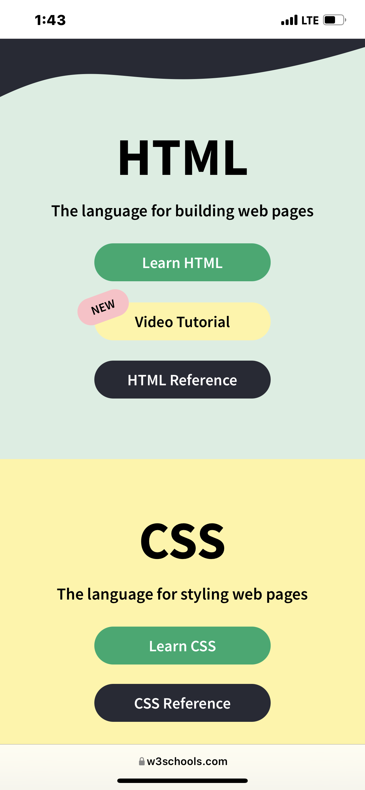

Design Principles Document
Elerunndu Victor Oluwapelumi
Proximity
w3 Schools
w3schools.com The W3schools website is a perfect example of a website that practices good proximity.
The elements on the websites are placed equally around each other with adequate distance around each of the elements.
Also, there is enough
spacing around each elements and sections of the website giving the overall website a wonderful and professional appearance.
This look makes it easy for any user to easily interact with the website.
momentum energy
momentumenergy.com.auAlignment

The momentum energy website is another website that practices good alignment.
Each elements on the website are well positioned relative to the entire website.
I also observed that each elements on the website are well padded
and well margine giving the overall website a wonderful and refreshing look.
This look makes it easy for any user to easily interact with the website.
photo comma
photocomma.comContrast

The choice of colors foe the photo comma website is what attracted me to the website.
While featuring a dark image as the backgorund, the other elements on the page are depicted with lighter and beautiful color.
This in turn
gives the website a very cool yet professional contrast.
Making it easy for users to be attracted to it and even want to explore the website.